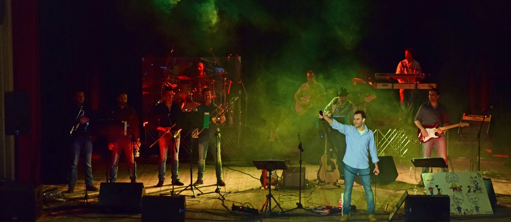
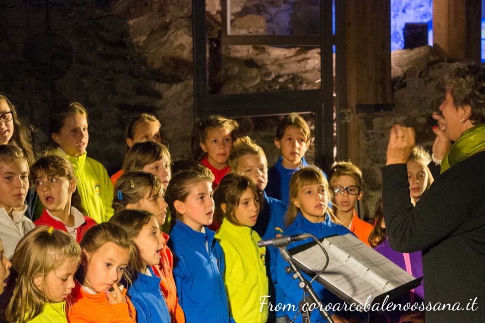
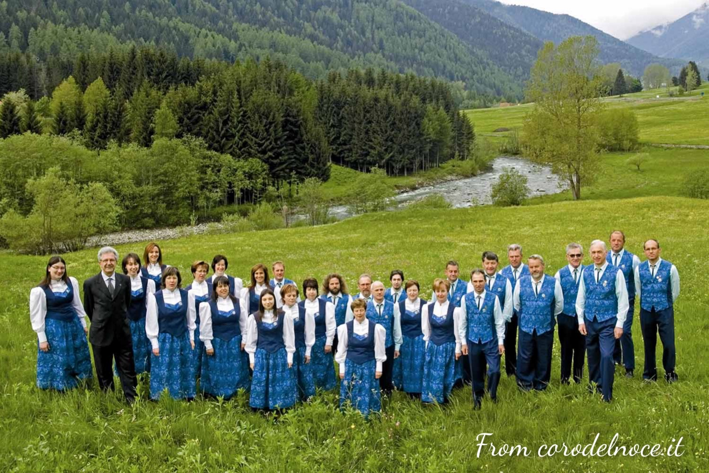
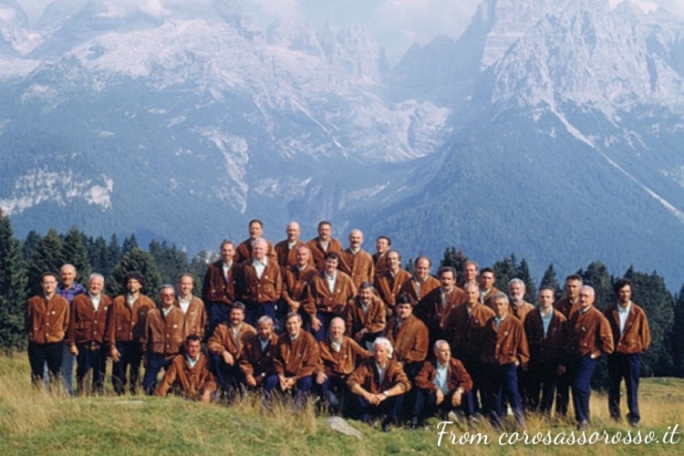

Musica trentina -> Band della val di Sole

I Gatti Randagi - coverband
Nati nel 2002, i Gatti Randagi diventano nel 2013 la prima cover band trentina ufficiale dei Nomadi. In occasione del cinquantesimo anniversario della band di "Io vagabondo", i Gatti Randagi hanno l'onore di aprire il concerto.
Video
Social e contatti
Musica trentina -> Cori della Val di Sole

Coro Arcobaleno
Nato nel 1996 durante un campo estivo, il coro Arcobaleno si divide in due sezioni: sezione voci bianche e sezione giovanile. Il repertorio del coro spazia notevolmente da canzoni popolari trentine a canzoni pop e gospel.
Video
Social e contatti
Sito web ufficiale

Coro del Noce
Il coro del Noce viene fondato nel 1978 e aveva come madrina Maria Romana De Gasperi, figlia di Alcide. Il repertorio spazia da musica liturgica a pop moderno e da canti popolari a musiche gospel.
Video
Social e contatti
Sito web ufficiale

Coro Sasso Rosso
Il coro Sasso Rosso nasce a Malè nel 1967. L'organo ha collaborato con numerosi musicisti e ha svolto numerose tournè in vari teatri italiani ed europei. Ha inciso cinque dischi e composto numerosi brani inediti.
Video
Social e contatti
Sito web ufficiale